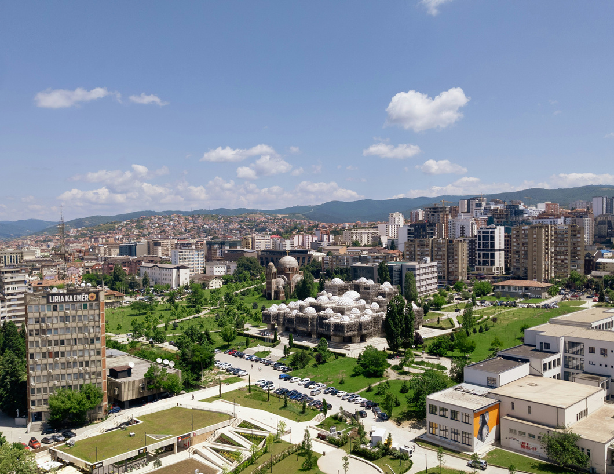

August 2026
Preparing for Prishtina
After what feels like a year of preparation, I am finally on my way to Prishtina. I am excited for the opportunity God has laid before me and for the chance to serve alongside my friend Colby.
Read more →PHILIP SMITH · PRISHTINA, KOSOVO
Following God's call to Prishtina, Kosovo, alongside my dear friend Colby, we are serving at a community center in the city, where we teach English classes to kids, lead various clubs for students, and volunteer with a local church's youth group. This journal is an attempt to highlight the ways God is at work in this city, as well as the ways He is pruning me and drawing me nearer to Him.

WHY I'M HERE
I am spending nine months in Prishtina serving at a community center, teaching English, leading student clubs, and volunteering with a local church's youth group.
More than simply recording what I do, I want this space to capture what I am learning, where I see God moving, and the ways He is shaping me along the way.
LATEST UPDATE
August 2026
After what feels like a year of preparation, I am finally on my way to Prishtina. I am excited for the opportunity God has laid before me and for the chance to serve alongside my friend Colby.
Read more →FROM THE JOURNAL
Leaving home, stepping into a new culture, and trusting that God will meet me in the unknown.
Read Journal #001PRAYER
Pray for deeper cultural immersion, peace of mind, genuine relationships with locals, and eyes to see what the Lord is doing in Kosovo.
Current prayer requests →